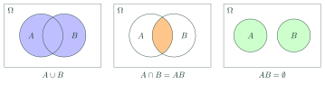

Union, Intersection and Independent EventsBiến cố hợp, giao, độc lập
Grade 11 · Topic: Probability RulesLớp 11 · Chủ đề: Các quy tắc tính xác suất
1Lesson IntroductionGiới thiệu bài học
Learning goalsMục tiêu bài học
By the end of this lesson you can:
Sau bài học này, em có thể:
describe the union and the intersection of two events as sets of outcomes;
mô tả biến cố hợp và biến cố giao dưới dạng tập hợp các kết quả;
recognise mutually exclusive events and independent events;
nhận biết hai biến cố xung khắc và hai biến cố độc lập;
use \(P(AB)=P(A)P(B)\) for independent events and check independence with it;
dùng \(P(AB)=P(A)P(B)\) cho hai biến cố độc lập và dùng đẳng thức này để kiểm tra tính độc lập;
translate real situations (shooters, machines, weather) into unions and intersections.
chuyển tình huống thực tế (xạ thủ, máy móc, thời tiết) thành biến cố hợp, giao.
2Mathematical VocabularyTừ vựng Toán học
union of events – the event "A or B occurs" (at least one of them occurs), written \(A\cup B\).
biến cố hợp – biến cố "A hoặc B xảy ra" (ít nhất một trong hai xảy ra), kí hiệu \(A\cup B\).
intersection of events – the event "both A and B occur", written \(A\cap B\) or \(AB\).
biến cố giao – biến cố "cả A và B cùng xảy ra", kí hiệu \(A\cap B\) hay \(AB\).
mutually exclusive – two events that cannot occur together: \(A\cap B=\varnothing\).
xung khắc – hai biến cố không thể cùng xảy ra: \(A\cap B=\varnothing\).
independent events – events where the occurrence of one does not change the probability of the other; then \(P(AB)=P(A)P(B)\).
biến cố độc lập – hai biến cố mà việc xảy ra hay không của biến cố này không làm thay đổi xác suất của biến cố kia; khi đó \(P(AB)=P(A)P(B)\).
3Useful English PhrasesCụm từ tiếng Anh thường gặp
A or B occurs.
A hoặc B xảy ra.
Both A and B occur.
Cả A và B cùng xảy ra.
The two events cannot happen at the same time.
Hai biến cố không thể cùng xảy ra.
The result of one does not affect the other.
Kết quả của phép thử này không ảnh hưởng đến phép thử kia.
At least one of the shooters hits the target.
Có ít nhất một xạ thủ bắn trúng.
4Prerequisite ReviewÔn tập kiến thức nền
From Grade 10 (Bài 26): sample space \(\Omega\), an event is a subset \(A\subset\Omega\), \(P(A)=\dfrac{n(A)}{n(\Omega)}\), \(P(\overline A)=1-P(A)\). Set operations: \(\cup\), \(\cap\).
Từ lớp 10 (Bài 26): không gian mẫu \(\Omega\), biến cố là tập con \(A\subset\Omega\), \(P(A)=\dfrac{n(A)}{n(\Omega)}\), \(P(\overline A)=1-P(A)\). Phép toán tập hợp: \(\cup\), \(\cap\).
5TheoryLý thuyết
5.1 Union and intersection of eventsBiến cố hợp và biến cố giao
DefinitionsĐịnh nghĩa
The union \(A\cup B\) is the event "\(A\) or \(B\) occurs" (at least one of them). As sets: \(\Omega_{A\cup B}=\Omega_A\cup\Omega_B\).
Biến cố hợp \(A\cup B\) là biến cố "\(A\) hoặc \(B\) xảy ra" (ít nhất một trong hai). Về tập hợp: \(\Omega_{A\cup B}=\Omega_A\cup\Omega_B\).
The intersection \(A\cap B\) (also written \(AB\)) is the event "both \(A\) and \(B\) occur". As sets: \(\Omega_{AB}=\Omega_A\cap\Omega_B\).
Biến cố giao \(A\cap B\) (viết gọn \(AB\)) là biến cố "cả \(A\) và \(B\) cùng xảy ra". Về tập hợp: \(\Omega_{AB}=\Omega_A\cap\Omega_B\).
\(A\), \(B\) are mutually exclusive if \(AB=\varnothing\): they cannot occur together. \(A\) and \(\overline A\) are always mutually exclusive.
\(A\), \(B\) xung khắc nếu \(AB=\varnothing\): chúng không thể cùng xảy ra. \(A\) và \(\overline A\) luôn xung khắc.

ExampleVí dụ
Roll a die. \(A\): "even" \(=\{2;4;6\}\), \(B\): "at least 4" \(=\{4;5;6\}\). Then \(A\cup B=\{2;4;5;6\}\), \(AB=\{4;6\}\). \(A\) and \(C\): "odd" are mutually exclusive.
Gieo một con xúc xắc. \(A\): "số chẵn" \(=\{2;4;6\}\), \(B\): "không nhỏ hơn 4" \(=\{4;5;6\}\). Khi đó \(A\cup B=\{2;4;5;6\}\), \(AB=\{4;6\}\). \(A\) và \(C\): "số lẻ" xung khắc.
5.2 Independent eventsBiến cố độc lập
Definition and propertyĐịnh nghĩa và tính chất
\(A\), \(B\) are independent if whether one occurs does not change the probability of the other (typically: two separate experiments — two dice, two shooters, two machines).
Hai biến cố \(A\), \(B\) độc lập nếu việc xảy ra hay không xảy ra của biến cố này không làm ảnh hưởng tới xác suất của biến cố kia (thường gặp: hai phép thử riêng rẽ — hai xúc xắc, hai xạ thủ, hai máy).
If \(A\), \(B\) are independent, so are \(A,\overline B\); \(\overline A,B\); \(\overline A,\overline B\).
Nếu \(A\), \(B\) độc lập thì các cặp \(A,\overline B\); \(\overline A,B\); \(\overline A,\overline B\) cũng độc lập.
\(A\), \(B\) independent \(\iff P(AB)=P(A)\cdot P(B)\) (the multiplication formula, studied in detail in Bài 30).
\(A\), \(B\) độc lập \(\iff P(AB)=P(A)\cdot P(B)\) (công thức nhân, học kĩ ở Bài 30).
Watch out!Lưu ý
"Mutually exclusive" and "independent" are different. If \(P(A)>0\), \(P(B)>0\) and \(A\), \(B\) are mutually exclusive, then \(P(AB)=0\ne P(A)P(B)\): they are not independent.
"Xung khắc" và "độc lập" là hai khái niệm khác nhau. Nếu \(P(A)>0\), \(P(B)>0\) và \(A\), \(B\) xung khắc thì \(P(AB)=0\ne P(A)P(B)\): chúng không độc lập.
6Worked ExamplesVí dụ có lời giải
ExampleVí dụ 1BasicCơ bản – Describing a union and an intersectionMô tả biến cố hợp, giao
A number is chosen from 1 to 20. \(A\): "divisible by 2", \(B\): "divisible by 3". Describe \(AB\) and find \(n(A\cup B)\).
Chọn ngẫu nhiên một số từ 1 đến 20. \(A\): "số chia hết cho 2", \(B\): "số chia hết cho 3". Mô tả biến cố \(AB\) và tính \(n(A\cup B)\).
Analysis: \(AB\): divisible by both, i.e. by 6.
Phân tích: \(AB\): chia hết cho cả 2 và 3, tức chia hết cho 6.
\(AB=\{6;12;18\}\), \(n(AB)=3\).
\(AB=\{6;12;18\}\), \(n(AB)=3\).
\(n(A)=10\), \(n(B)=6\), so \(n(A\cup B)=10+6-3=13\).
\(n(A)=10\), \(n(B)=6\), nên \(n(A\cup B)=10+6-3=13\).
\(AB=\{6;12;18\}\), \(n(A\cup B)=13\).
\(AB=\{6;12;18\}\), \(n(A\cup B)=13\).
ExampleVí dụ 2BasicCơ bản – ShootersHai xạ thủ
Two shooters each fire once. \(A\): "the first hits", \(B\): "the second hits". Express in terms of \(A\), \(B\): (a) both hit; (b) at least one hits; (c) nobody hits.
Hai xạ thủ mỗi người bắn một phát. \(A\): "người thứ nhất bắn trúng", \(B\): "người thứ hai bắn trúng". Biểu diễn qua \(A\), \(B\): a) cả hai trúng; b) có ít nhất một người trúng; c) không ai trúng.
Analysis: "and" ↔ intersection, "or / at least one" ↔ union.
Phân tích: "và" ↔ giao, "hoặc / ít nhất một" ↔ hợp.
(a) \(AB\); (b) \(A\cup B\); (c) \(\overline A\,\overline B\), the complement of \(A\cup B\).
a) \(AB\); b) \(A\cup B\); c) \(\overline A\,\overline B\), là biến cố đối của \(A\cup B\).
\(AB\), \(A\cup B\), \(\overline A\,\overline B=\overline{A\cup B}\).
\(AB\), \(A\cup B\), \(\overline A\,\overline B=\overline{A\cup B}\).
ExampleVí dụ 3IntermediateTrung bình – Checking independence by countingKiểm tra tính độc lập bằng cách đếm
Two dice are rolled. \(A\): "the first die shows 6", \(B\): "the sum is 7". Are \(A\), \(B\) independent?
Gieo hai con xúc xắc. \(A\): "con thứ nhất ra mặt 6", \(B\): "tổng số chấm bằng 7". Hai biến cố \(A\), \(B\) có độc lập không?
Analysis: Compare \(P(AB)\) with \(P(A)P(B)\).
Phân tích: So sánh \(P(AB)\) với \(P(A)P(B)\).
\(P(A)=\frac{6}{36}=\frac16\), \(P(B)=\frac{6}{36}=\frac16\).
\(P(A)=\frac{6}{36}=\frac16\), \(P(B)=\frac{6}{36}=\frac16\).
\(AB=\{(6;1)\}\): \(P(AB)=\frac1{36}=\frac16\cdot\frac16\).
\(AB=\{(6;1)\}\): \(P(AB)=\frac1{36}=\frac16\cdot\frac16\).
Yes, they are independent (a surprising but true fact).
Có, \(A\) và \(B\) độc lập (khá bất ngờ nhưng đúng).
ExampleVí dụ 4IntermediateTrung bình – Two boxesHai hộp bi
Box I: 3 red, 2 white balls. Box II: 4 red, 6 white. One ball is taken from each box. Find P(both red) and P(both white).
Hộp I có 3 bi đỏ, 2 bi trắng; hộp II có 4 bi đỏ, 6 bi trắng. Lấy ngẫu nhiên từ mỗi hộp một viên. Tính xác suất hai viên đều đỏ và hai viên đều trắng.
Analysis: The two draws are independent.
Phân tích: Hai lần lấy độc lập với nhau.
\(P(\text{both red})=\frac35\cdot\frac4{10}=\frac{6}{25}\).
\(P(\text{hai đỏ})=\frac35\cdot\frac4{10}=\frac{6}{25}\).
\(P(\text{both white})=\frac25\cdot\frac6{10}=\frac{6}{25}\).
\(P(\text{hai trắng})=\frac25\cdot\frac6{10}=\frac{6}{25}\).
\(0{,}24\) and \(0{,}24\).
\(0{,}24\) và \(0{,}24\).
ExampleVí dụ 5AdvancedNâng cao – Exclusive is not independentXung khắc không phải độc lập
A die is rolled. \(A\): "the number is 1 or 2", \(B\): "the number is 5 or 6", \(C\): "the number is even". Which pairs are mutually exclusive? Which are independent?
Gieo một con xúc xắc. \(A\): "ra mặt 1 hoặc 2", \(B\): "ra mặt 5 hoặc 6", \(C\): "ra mặt chẵn". Cặp nào xung khắc? Cặp nào độc lập?
Analysis: Use sets and \(P(XY)=P(X)P(Y)\).
Phân tích: Dùng tập hợp và đẳng thức \(P(XY)=P(X)P(Y)\).
\(AB=\varnothing\): mutually exclusive, and \(P(AB)=0\ne\frac13\cdot\frac13\): not independent.
\(AB=\varnothing\): xung khắc, và \(P(AB)=0\ne\frac13\cdot\frac13\): không độc lập.
\(AC=\{2\}\): \(P(AC)=\frac16=\frac13\cdot\frac12\): independent.
\(AC=\{2\}\): \(P(AC)=\frac16=\frac13\cdot\frac12\): độc lập.
\(BC=\{6\}\): likewise independent.
\(BC=\{6\}\): tương tự, độc lập.
Only \(A,B\) are mutually exclusive; \(A,C\) and \(B,C\) are independent.
Chỉ \(A,B\) xung khắc; các cặp \(A,C\) và \(B,C\) độc lập.
7PracticeBài tập luyện tập
A. Multiple ChoiceA. Trắc nghiệm nhiều lựa chọn
A die is rolled. \(A\): "even number", \(B\): "at least 3". The event \(A\cap B\) is…
Gieo một con xúc xắc. \(A\): "số chấm chẵn", \(B\): "số chấm không nhỏ hơn 3". Biến cố \(A\cap B\) là…
Answer: a. Common outcomes.
Đáp án a. Các kết quả thuộc cả \(A\) và \(B\).
\(A\), \(B\) are independent, \(P(A)=0{,}7\), \(P(B)=0{,}4\). \(P(A\overline B)=\)…
Hai biến cố \(A\), \(B\) độc lập, \(P(A)=0{,}7\), \(P(B)=0{,}4\). Khi đó \(P(A\overline B)=\)…
Answer: a. \(A\), \(\overline B\) are independent.
Đáp án a. \(A\) và \(\overline B\) độc lập: \(0{,}7\cdot(1-0{,}4)\).
Box I: 3 red, 2 blue; box II: 1 red, 4 blue. One ball from each box. P(both blue) =…
Hộp I có 3 bi đỏ, 2 bi xanh; hộp II có 1 bi đỏ, 4 bi xanh. Lấy mỗi hộp một viên. Xác suất lấy được hai viên xanh là…
Answer: c. Independent draws.
Đáp án c. Hai lần lấy độc lập: \(\dfrac{2}{5}\cdot\dfrac{4}{5}\).
B. True or FalseB. Đúng hoặc sai
Two mutually exclusive events with positive probabilities are never independent.
Hai biến cố xung khắc có xác suất dương thì không độc lập.
Compare the definitions.
Đối chiếu định nghĩa xung khắc và độc lập.
"Nobody hits" is the complement of "at least one hits".
"Không ai bắn trúng" là biến cố đối của "có ít nhất một người bắn trúng".
Translate into union/intersection.
Chuyển sang ngôn ngữ hợp, giao.
C. Short AnswerC. Trả lời ngắn
A number is chosen from 1 to 30. \(A\): "divisible by 2", \(B\): "divisible by 5". How many outcomes are in \(A\cup B\)?
Chọn một số từ 1 đến 30. \(A\): "chia hết cho 2", \(B\): "chia hết cho 5". Biến cố \(A\cup B\) có bao nhiêu kết quả thuận lợi?
Enter a number.
Nhập một số.
\(n(A)+n(B)-n(AB)\).
\(15+6-3\) (\(AB\): chia hết cho 10).
Two machines work independently with probabilities 0{,}8 and 0{,}9. P(both work), as a percentage, is…
Hai máy hoạt động độc lập với xác suất tốt lần lượt 0{,}8 và 0{,}9. Xác suất cả hai máy đều tốt bằng bao nhiêu phần trăm?
Enter a number.
Nhập một số.
\(P(AB)=P(A)P(B)\).
\(0{,}8\cdot0{,}9=0{,}72\).
A. Multiple ChoiceA. Trắc nghiệm nhiều lựa chọn
A die is rolled. \(A\): "odd number", \(B\): "at most 3". The event \(A\cap B\) is…
Gieo một con xúc xắc. \(A\): "số chấm lẻ", \(B\): "số chấm không lớn hơn 3". Biến cố \(A\cap B\) là…
Answer: a. Common outcomes.
Đáp án a. Các kết quả thuộc cả \(A\) và \(B\).
\(A\), \(B\) are independent, \(P(A)=0{,}6\), \(P(B)=0{,}3\). \(P(A\overline B)=\)…
Hai biến cố \(A\), \(B\) độc lập, \(P(A)=0{,}6\), \(P(B)=0{,}3\). Khi đó \(P(A\overline B)=\)…
Answer: a. \(A\), \(\overline B\) are independent.
Đáp án a. \(A\) và \(\overline B\) độc lập: \(0{,}6\cdot(1-0{,}3)\).
Box I: 4 red, 1 blue; box II: 3 red, 2 blue. One ball from each box. P(both blue) =…
Hộp I có 4 bi đỏ, 1 bi xanh; hộp II có 3 bi đỏ, 2 bi xanh. Lấy mỗi hộp một viên. Xác suất lấy được hai viên xanh là…
Answer: c. Independent draws.
Đáp án c. Hai lần lấy độc lập: \(\dfrac{1}{5}\cdot\dfrac{2}{5}\).
B. True or FalseB. Đúng hoặc sai
If \(A\), \(B\) are independent then \(\overline A\), \(\overline B\) are independent.
Nếu \(A\), \(B\) độc lập thì \(\overline A\), \(\overline B\) cũng độc lập.
Compare the definitions.
Đối chiếu định nghĩa xung khắc và độc lập.
The event "both hit" is \(A\cup B\).
Biến cố "cả hai cùng bắn trúng" là \(A\cup B\).
Translate into union/intersection.
Chuyển sang ngôn ngữ hợp, giao.
C. Short AnswerC. Trả lời ngắn
A number is chosen from 1 to 40. \(A\): "divisible by 4", \(B\): "divisible by 6". How many outcomes are in \(A\cup B\)?
Chọn một số từ 1 đến 40. \(A\): "chia hết cho 4", \(B\): "chia hết cho 6". Biến cố \(A\cup B\) có bao nhiêu kết quả thuận lợi?
Enter a number.
Nhập một số.
\(n(A)+n(B)-n(AB)\).
\(10+6-3\) (\(AB\): chia hết cho 12).
Two machines work independently with probabilities 0{,}7 and 0{,}9. P(both work), as a percentage, is…
Hai máy hoạt động độc lập với xác suất tốt lần lượt 0{,}7 và 0{,}9. Xác suất cả hai máy đều tốt bằng bao nhiêu phần trăm?
Enter a number.
Nhập một số.
\(P(AB)=P(A)P(B)\).
\(0{,}7\cdot0{,}9=0{,}63\).
A. Multiple ChoiceA. Trắc nghiệm nhiều lựa chọn
A die is rolled. \(A\): "prime number", \(B\): "not 1 or 3". The event \(A\cap B\) is…
Gieo một con xúc xắc. \(A\): "số nguyên tố", \(B\): "khác 1 và 3". Biến cố \(A\cap B\) là…
Answer: a. Common outcomes.
Đáp án a. Các kết quả thuộc cả \(A\) và \(B\).
\(A\), \(B\) are independent, \(P(A)=0{,}9\), \(P(B)=0{,}3\). \(P(A\overline B)=\)…
Hai biến cố \(A\), \(B\) độc lập, \(P(A)=0{,}9\), \(P(B)=0{,}3\). Khi đó \(P(A\overline B)=\)…
Answer: a. \(A\), \(\overline B\) are independent.
Đáp án a. \(A\) và \(\overline B\) độc lập: \(0{,}9\cdot(1-0{,}3)\).
Box I: 5 red, 3 blue; box II: 1 red, 4 blue. One ball from each box. P(both blue) =…
Hộp I có 5 bi đỏ, 3 bi xanh; hộp II có 1 bi đỏ, 4 bi xanh. Lấy mỗi hộp một viên. Xác suất lấy được hai viên xanh là…
Answer: c. Independent draws.
Đáp án c. Hai lần lấy độc lập: \(\dfrac{3}{8}\cdot\dfrac{4}{5}\).
B. True or FalseB. Đúng hoặc sai
Mutually exclusive events are always independent.
Hai biến cố xung khắc thì luôn độc lập.
Compare the definitions.
Đối chiếu định nghĩa xung khắc và độc lập.
\(A\cup B\) occurs when exactly one of \(A\), \(B\) occurs.
Biến cố \(A\cup B\) chỉ xảy ra khi đúng một trong hai biến cố \(A\), \(B\) xảy ra.
Translate into union/intersection.
Chuyển sang ngôn ngữ hợp, giao.
C. Short AnswerC. Trả lời ngắn
A number is chosen from 1 to 50. \(A\): "divisible by 3", \(B\): "divisible by 4". How many outcomes are in \(A\cup B\)?
Chọn một số từ 1 đến 50. \(A\): "chia hết cho 3", \(B\): "chia hết cho 4". Biến cố \(A\cup B\) có bao nhiêu kết quả thuận lợi?
Enter a number.
Nhập một số.
\(n(A)+n(B)-n(AB)\).
\(16+12-4\) (\(AB\): chia hết cho 12).
Two machines work independently with probabilities 0{,}6 and 0{,}5. P(both work), as a percentage, is…
Hai máy hoạt động độc lập với xác suất tốt lần lượt 0{,}6 và 0{,}5. Xác suất cả hai máy đều tốt bằng bao nhiêu phần trăm?
Enter a number.
Nhập một số.
\(P(AB)=P(A)P(B)\).
\(0{,}6\cdot0{,}5=0{,}3\).
D. Self-practice: Multiple ChoiceD. Tự luyện: trắc nghiệm
A die is rolled. \(A\): "the number is prime", \(B\): "the number is at least 3". Then \(A\cup B=\)…
Gieo một con xúc xắc. \(A\): "số chấm là số nguyên tố", \(B\): "số chấm không nhỏ hơn 3". Khi đó \(A\cup B=\)…
Answer: b. Union: outcomes in \(A\) or in \(B\).
Đáp án b. \(A=\{2;\,3;\,5\}\), \(B=\{3;\,4;\,5;\,6\}\); \(A\cup B\) gồm các kết quả thuộc \(A\) hoặc \(B\).
A die is rolled. \(A\): "the number is prime", \(B\): "the number is at least 3". Then \(A\cap B=\)…
Gieo một con xúc xắc. \(A\): "số chấm là số nguyên tố", \(B\): "số chấm không nhỏ hơn 3". Khi đó \(A\cap B\) (hay \(AB\)) \(=\)…
Answer: a. Intersection: outcomes in both.
Đáp án a. \(A=\{2;\,3;\,5\}\), \(B=\{3;\,4;\,5;\,6\}\); \(AB\) gồm các kết quả thuộc cả hai.
\(A\), \(B\) are independent, \(P(A)=0{,}8\), \(P(B)=0{,}7\). Then \(P(AB)=\)…
Hai biến cố \(A\), \(B\) độc lập, \(P(A)=0{,}8\), \(P(B)=0{,}7\). Khi đó \(P(AB)=\)…
Answer: c. Independent: \(P(AB)=P(A)P(B)\).
Đáp án c. \(A\), \(B\) độc lập nên \(P(AB)=P(A)\cdot P(B)=0{,}8\cdot0{,}7\).
\(A\), \(B\) are independent, \(P(A)=0{,}8\), \(P(B)=0{,}6\). Then \(P(\overline AB)=\)…
Hai biến cố \(A\), \(B\) độc lập, \(P(A)=0{,}8\), \(P(B)=0{,}6\). Khi đó \(P(\overline AB)=\)…
Answer: d. \(\overline A\) and \(B\) are also independent.
Đáp án d. \(\overline A\) và \(B\) cũng độc lập: \(P(\overline AB)=(1-0{,}8)\cdot0{,}6\).
Box I has 3 red and 5 white balls; box II has 4 red and 3 white. One ball is drawn from each box. P(both red) =…
Hộp I có 3 cầu đỏ, 5 cầu trắng; hộp II có 4 cầu đỏ, 3 cầu trắng. Lấy ngẫu nhiên mỗi hộp một quả. Xác suất lấy được hai quả đỏ là…
Answer: b. The two draws are independent.
Đáp án b. Hai lần lấy độc lập: \(\dfrac{3}{8}\cdot\dfrac{4}{7}=\dfrac{3}{14}\).
A die is rolled. Are the events "at most 2" and "at least 2" mutually exclusive?
Gieo một con xúc xắc. Hai biến cố "không lớn hơn 2" và "không nhỏ hơn 2" có xung khắc không?
Answer: b. Check whether \(A\cap B=\varnothing\).
Đáp án b. Xét xem \(A\cap B\) có rỗng không.
2 shooters fire once; \(A_i\): "shooter i hits". The event \(A_1\cap A_2\) is…
2 xạ thủ mỗi người bắn một phát; \(A_i\): "xạ thủ thứ \(i\) bắn trúng". Biến cố \(A_1\cap A_2\) là…
Answer: a. Union = at least one; intersection = all.
Đáp án a. Hợp: ít nhất một biến cố xảy ra; giao: tất cả cùng xảy ra.
\(A\), \(B\) are independent, \(P(A)=0{,}8\), \(P(B)=0{,}4\). Then \(P(AB)=\)…
Hai biến cố \(A\), \(B\) độc lập, \(P(A)=0{,}8\), \(P(B)=0{,}4\). Khi đó \(P(AB)=\)…
Answer: d. Independent: \(P(AB)=P(A)P(B)\).
Đáp án d. \(A\), \(B\) độc lập nên \(P(AB)=P(A)\cdot P(B)=0{,}8\cdot0{,}4\).
D. Self-practice: Multiple ChoiceD. Tự luyện: trắc nghiệm
A die is rolled. \(A\): "the number is odd", \(B\): "the number is at least 5". Then \(A\cup B=\)…
Gieo một con xúc xắc. \(A\): "số chấm là số lẻ", \(B\): "số chấm không nhỏ hơn 5". Khi đó \(A\cup B=\)…
Answer: c. Union: outcomes in \(A\) or in \(B\).
Đáp án c. \(A=\{1;\,3;\,5\}\), \(B=\{5;\,6\}\); \(A\cup B\) gồm các kết quả thuộc \(A\) hoặc \(B\).
A die is rolled. \(A\): "the number is prime", \(B\): "the number is at least 5". Then \(A\cap B=\)…
Gieo một con xúc xắc. \(A\): "số chấm là số nguyên tố", \(B\): "số chấm không nhỏ hơn 5". Khi đó \(A\cap B\) (hay \(AB\)) \(=\)…
Answer: d. Intersection: outcomes in both.
Đáp án d. \(A=\{2;\,3;\,5\}\), \(B=\{5;\,6\}\); \(AB\) gồm các kết quả thuộc cả hai.
\(A\), \(B\) are independent, \(P(A)=0{,}4\), \(P(B)=0{,}5\). Then \(P(AB)=\)…
Hai biến cố \(A\), \(B\) độc lập, \(P(A)=0{,}4\), \(P(B)=0{,}5\). Khi đó \(P(AB)=\)…
Answer: c. Independent: \(P(AB)=P(A)P(B)\).
Đáp án c. \(A\), \(B\) độc lập nên \(P(AB)=P(A)\cdot P(B)=0{,}4\cdot0{,}5\).
\(A\), \(B\) are independent, \(P(A)=0{,}4\), \(P(B)=0{,}75\). Then \(P(\overline AB)=\)…
Hai biến cố \(A\), \(B\) độc lập, \(P(A)=0{,}4\), \(P(B)=0{,}75\). Khi đó \(P(\overline AB)=\)…
Answer: a. \(\overline A\) and \(B\) are also independent.
Đáp án a. \(\overline A\) và \(B\) cũng độc lập: \(P(\overline AB)=(1-0{,}4)\cdot0{,}75\).
Box I has 5 red and 3 white balls; box II has 5 red and 5 white. One ball is drawn from each box. P(both red) =…
Hộp I có 5 cầu đỏ, 3 cầu trắng; hộp II có 5 cầu đỏ, 5 cầu trắng. Lấy ngẫu nhiên mỗi hộp một quả. Xác suất lấy được hai quả đỏ là…
Answer: d. The two draws are independent.
Đáp án d. Hai lần lấy độc lập: \(\dfrac{5}{8}\cdot\dfrac{5}{10}=\dfrac{5}{16}\).
A die is rolled. Are the events "at most 4" and "at least 4" mutually exclusive?
Gieo một con xúc xắc. Hai biến cố "không lớn hơn 4" và "không nhỏ hơn 4" có xung khắc không?
Answer: a. Check whether \(A\cap B=\varnothing\).
Đáp án a. Xét xem \(A\cap B\) có rỗng không.
2 shooters fire once; \(A_i\): "shooter i hits". The event \(A_1\cup A_2\) is…
2 xạ thủ mỗi người bắn một phát; \(A_i\): "xạ thủ thứ \(i\) bắn trúng". Biến cố \(A_1\cup A_2\) là…
Answer: d. Union = at least one; intersection = all.
Đáp án d. Hợp: ít nhất một biến cố xảy ra; giao: tất cả cùng xảy ra.
\(A\), \(B\) are independent, \(P(A)=0{,}9\), \(P(B)=0{,}5\). Then \(P(AB)=\)…
Hai biến cố \(A\), \(B\) độc lập, \(P(A)=0{,}9\), \(P(B)=0{,}5\). Khi đó \(P(AB)=\)…
Answer: c. Independent: \(P(AB)=P(A)P(B)\).
Đáp án c. \(A\), \(B\) độc lập nên \(P(AB)=P(A)\cdot P(B)=0{,}9\cdot0{,}5\).
D. Self-practice: Multiple ChoiceD. Tự luyện: trắc nghiệm
A die is rolled. \(A\): "the number is even", \(B\): "the number is at least 3". Then \(A\cup B=\)…
Gieo một con xúc xắc. \(A\): "số chấm là số chẵn", \(B\): "số chấm không nhỏ hơn 3". Khi đó \(A\cup B=\)…
Answer: c. Union: outcomes in \(A\) or in \(B\).
Đáp án c. \(A=\{2;\,4;\,6\}\), \(B=\{3;\,4;\,5;\,6\}\); \(A\cup B\) gồm các kết quả thuộc \(A\) hoặc \(B\).
A die is rolled. \(A\): "the number is even", \(B\): "the number is at least 5". Then \(A\cap B=\)…
Gieo một con xúc xắc. \(A\): "số chấm là số chẵn", \(B\): "số chấm không nhỏ hơn 5". Khi đó \(A\cap B\) (hay \(AB\)) \(=\)…
Answer: b. Intersection: outcomes in both.
Đáp án b. \(A=\{2;\,4;\,6\}\), \(B=\{5;\,6\}\); \(AB\) gồm các kết quả thuộc cả hai.
\(A\), \(B\) are independent, \(P(A)=0{,}9\), \(P(B)=0{,}4\). Then \(P(AB)=\)…
Hai biến cố \(A\), \(B\) độc lập, \(P(A)=0{,}9\), \(P(B)=0{,}4\). Khi đó \(P(AB)=\)…
Answer: d. Independent: \(P(AB)=P(A)P(B)\).
Đáp án d. \(A\), \(B\) độc lập nên \(P(AB)=P(A)\cdot P(B)=0{,}9\cdot0{,}4\).
\(A\), \(B\) are independent, \(P(A)=0{,}25\), \(P(B)=0{,}6\). Then \(P(\overline AB)=\)…
Hai biến cố \(A\), \(B\) độc lập, \(P(A)=0{,}25\), \(P(B)=0{,}6\). Khi đó \(P(\overline AB)=\)…
Answer: b. \(\overline A\) and \(B\) are also independent.
Đáp án b. \(\overline A\) và \(B\) cũng độc lập: \(P(\overline AB)=(1-0{,}25)\cdot0{,}6\).
Box I has 6 red and 7 white balls; box II has 5 red and 4 white. One ball is drawn from each box. P(both red) =…
Hộp I có 6 cầu đỏ, 7 cầu trắng; hộp II có 5 cầu đỏ, 4 cầu trắng. Lấy ngẫu nhiên mỗi hộp một quả. Xác suất lấy được hai quả đỏ là…
Answer: d. The two draws are independent.
Đáp án d. Hai lần lấy độc lập: \(\dfrac{6}{13}\cdot\dfrac{5}{9}=\dfrac{10}{39}\).
A die is rolled. Are the events "prime" and "even" mutually exclusive?
Gieo một con xúc xắc. Hai biến cố "nguyên tố" và "chẵn" có xung khắc không?
Answer: c. Check whether \(A\cap B=\varnothing\).
Đáp án c. Xét xem \(A\cap B\) có rỗng không.
3 shooters fire once; \(A_i\): "shooter i hits". The event \(A_1\cup A_2\cup A_3\) is…
3 xạ thủ mỗi người bắn một phát; \(A_i\): "xạ thủ thứ \(i\) bắn trúng". Biến cố \(A_1\cup A_2\cup A_3\) là…
Answer: d. Union = at least one; intersection = all.
Đáp án d. Hợp: ít nhất một biến cố xảy ra; giao: tất cả cùng xảy ra.
\(A\), \(B\) are independent, \(P(A)=0{,}7\), \(P(B)=0{,}25\). Then \(P(AB)=\)…
Hai biến cố \(A\), \(B\) độc lập, \(P(A)=0{,}7\), \(P(B)=0{,}25\). Khi đó \(P(AB)=\)…
Answer: c. Independent: \(P(AB)=P(A)P(B)\).
Đáp án c. \(A\), \(B\) độc lập nên \(P(AB)=P(A)\cdot P(B)=0{,}7\cdot0{,}25\).
8Common MistakesLỗi thường gặp
Mixing up "or" and "and". "At least one" is a union, "both" is an intersection.
Nhầm "hoặc" với "và". "Ít nhất một" là hợp, "cả hai" là giao.
Thinking mutually exclusive means independent. Exclusive events with positive probabilities are dependent.
Cho rằng xung khắc là độc lập. Hai biến cố xung khắc có xác suất dương thì không độc lập.
Counting common outcomes twice. \(n(A\cup B)=n(A)+n(B)-n(AB)\).
Đếm hai lần các kết quả chung. \(n(A\cup B)=n(A)+n(B)-n(AB)\).
Assuming independence without reason. Drawing two balls from the same box without replacement gives dependent events.
Mặc nhiên coi là độc lập. Lấy lần lượt hai viên bi từ cùng một hộp không hoàn lại cho các biến cố không độc lập.
9Lesson SummaryTổng kết
\(A\cup B\): at least one occurs; \(AB\): both occur.
\(A\cup B\): ít nhất một biến cố xảy ra; \(AB\): cả hai cùng xảy ra.
Mutually exclusive: \(AB=\varnothing\).
Xung khắc: \(AB=\varnothing\).
Independent: \(P(AB)=P(A)P(B)\); complements of independent events are independent.
Độc lập: \(P(AB)=P(A)P(B)\); các biến cố đối của chúng cũng độc lập.
Key words: union, intersection, mutually exclusive, independent.
Từ cần nhớ: union, intersection, mutually exclusive, independent.